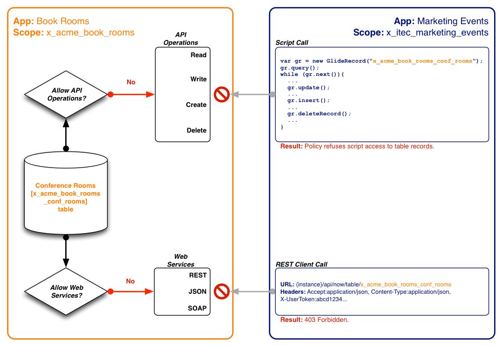
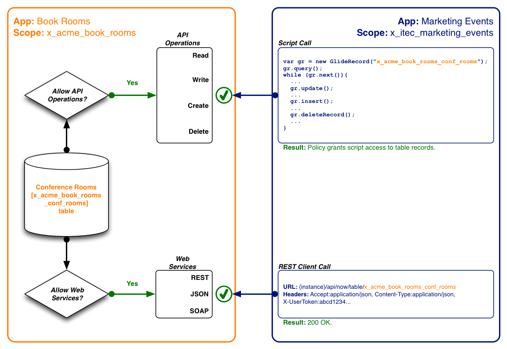
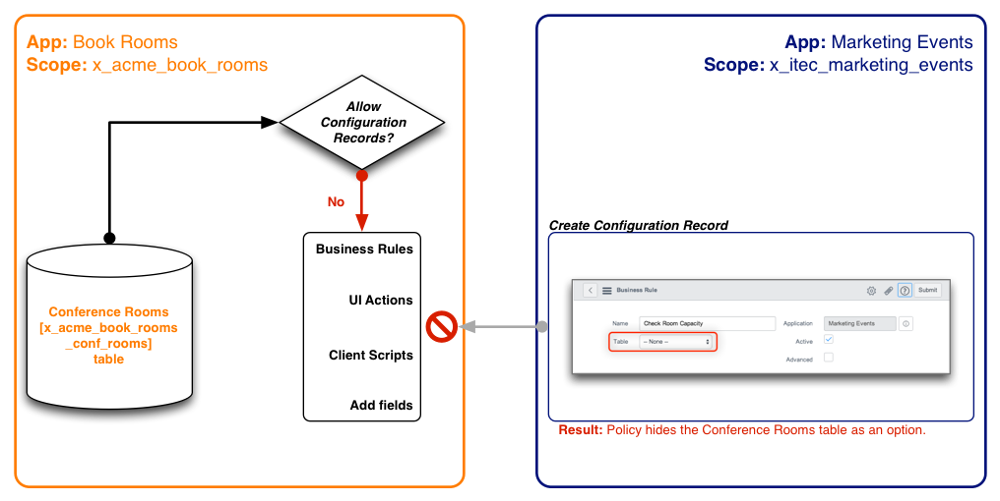
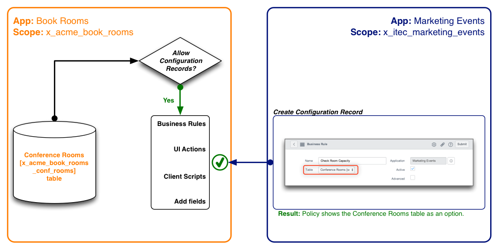

Application Access Settings
| |
Note: This article applies to Fuji. For more current information, see Application Access Settings at http://docs.servicenow.com
The Wiki page is no longer being updated. Please refer to http://docs.servicenow.com for the latest product documentation. |
Contents
1 Overview
You can specify what application artifacts are available to other custom applications in different application scopes. These permissions are in addition to the standard access controls (ACLs) that determine whether users can access data in the custom application table from the user interface.
Application access settings are available starting with the Fuji release.
2 Set Runtime Access to Application Tables
Access permissions can be set for the following access points.
- Script API: applies to any supported object or method call from the scoped system API such as a GlideRecord call.
- Web services: applies to any supported web service call such as a REST, JSON, or SOAP web service.
These access permissions protect application tables at runtime. The system does not prevent you from creating API or web service calls to the application tables, rather it determines if the API or web service call is allowed to run against the application table. API or web service calls that violate the access permissions for an application table produce an error. For example, making a web service call to a protected application table produces a 403 Forbidden HTTP error.
To set runtime access permissions:
- Navigate to System Applications > Applications.
- Click the button for the application type you want to edit.
- Developed: displays applications created on this instance.
- Downloaded: displays applications downloaded on this instance.
- Click the application name or the Edit button for the application you want to work on.
- From the Tables related list, select the table whose access permission you want to set.
- From the Application Access section, set the runtime access permissions (see table).
- Click Update.
| Field | Description |
|---|---|
| Can read | Select the check box to allow script objects from other application scopes to read records stored in this table. This option offers runtime protection. For example, a script in another application can query data on this table. You must first select read access to grant any other API record operation. |
| Can write | Select the check box to allow script objects from other application scopes to modify records stored in this table. This option offers runtime protection. For example, a script in another application can modify a field value on this table. This option is available only when the Can read check box is selected.
Clear the check box to prevent script objects from other application scopes from modifying data stored in this table. |
| Can create | Select the check box to to allow script objects from other application scopes to create records in this table. This option offers runtime protection. For example, a script in another application can insert a new record in this table. This option is available only when the Can read check box is selected.
Clear the check box to prevent script objects from other application scopes from creating records in this table. |
| Can delete | Select the check box to to allow script objects from other application scopes to delete records from this table. This option offers runtime protection. For example, a script in another application can remove a record from this table. This option is available only when the Can read check box is selected.
Clear the check box to prevent script objects from other application scopes from deleting records from this table. |
| Allow access to this table via web services | Select the check box to allow users to make inbound web service queries to this table. This option offers both design-time and runtime protection. The user performing the query must have the correct permissions to access this table, even when this check box is selected.
Clear the check box to prevent users from making web service queries to this table. |
2.1 Default Runtime Access Permissions
By default, new application tables allow read access from other application scopes.
| Field | Value |
|---|---|
| Accessible from | All application scopes |
| Can read | Enabled |
| Can create | Disabled |
| Can update | Disabled |
| Can delete | Disabled |
| Allow access to this table via web services | Enabled |
{kind=link}
2.2 Example: Denying All Runtime Access
You can deny all runtime access to application data with the following settings.
| Field | Value |
|---|---|
| Accessible from | This application scope only |
| Can read | Disabled |
| Can create | Disabled |
| Can update | Disabled |
| Can delete | Disabled |
| Allow access to this table via web services | Disabled |
{kind=link}
The following diagram illustrates the effect of denying other application scopes access to application tables from script API and web service calls.
| Click the plus to view diagram |
|---|
|
 Deny all runtime access permissions to application tables |
{kind=link}
2.3 Example: Granting All Runtime Access
You can permit some or all runtime script API and web service calls from other application scopes.Granting access requires setting the following values in the table record.
| Field | Value |
|---|---|
| Accessible from | All application scopes |
| Can read | Enabled |
| Can create | Enabled |
| Can update | Enabled |
| Can delete | Enabled |
| Allow access to this table via web services | Enabled |
{kind=link}
The following diagram illustrates the effect of granting access to application tables from API calls and web services in other application scopes.
| Click the plus to view diagram |
|---|
|
 Granted access to application tables |
{kind=link}
3 Set Design-Time Access to Application Tables
As the application developer, you can grant or deny other applications the permission to create configuration records, also known as application files, that extend the functionality of an application. The permission applies to any platform feature that extends the functionality of an application data table such as:
- Business rules
- UI actions
- Client scripts
These access permissions protect the application data table at design-time. The system prevents you from creating configuration records by hiding the application data table as an option in the Table field. For example, a protected application table does not appear as an option when you create configuration records such as UI actions and client scripts.
Even when permission is granted to create configuration records, some configuration records have additional restrictions to protect application data from unwanted changes from other application scopes. For more information, see Additional Configuration Record Restrictions.
3.1 Default Design Access Permissions
By default, new application tables prevent other application scopes from creating configuration records on application data tables. This prevents any other applications from changing the functionality of a table.
| Field | Value |
|---|---|
| Accessible from | All application scopes |
| Can read | Enabled |
| Can create | Disabled |
| Can update | Disabled |
| Can delete | Disabled |
| Allow access to this table via web services | Enabled |
| Allow configuration | Disabled |
The following diagram illustrates the effect of denying other application scopes the ability to create configuration records.
| Click the plus to view diagram |
|---|
|
 Limiting design access to this application scope only |
{kind=link}
3.2 Example: Granting Access to Configuration Records
You can permit other application scopes to create configuration records on application data tables. You can grant access to the following configuration records with these settings.
| Configuration record | Settings required to grant access |
|---|---|
| Access controls |
|
| Business rules | |
| Client scripts |
|
| Dictionary entry (new field only) | |
| UI actions |
{kind=link}
The following diagram illustrates the effect of granting other application scopes the ability to create configuration records.
| Click the plus to view diagram |
|---|
|
 Granting access to configuration records |
{kind=link}
3.3 Additional Configuration Record Restrictions
Regardless of the design-time settings you enable, the system always enforces some creations restrictions on configuration records that cross application scopes. See Creation Restrictions Across Application Scopes.